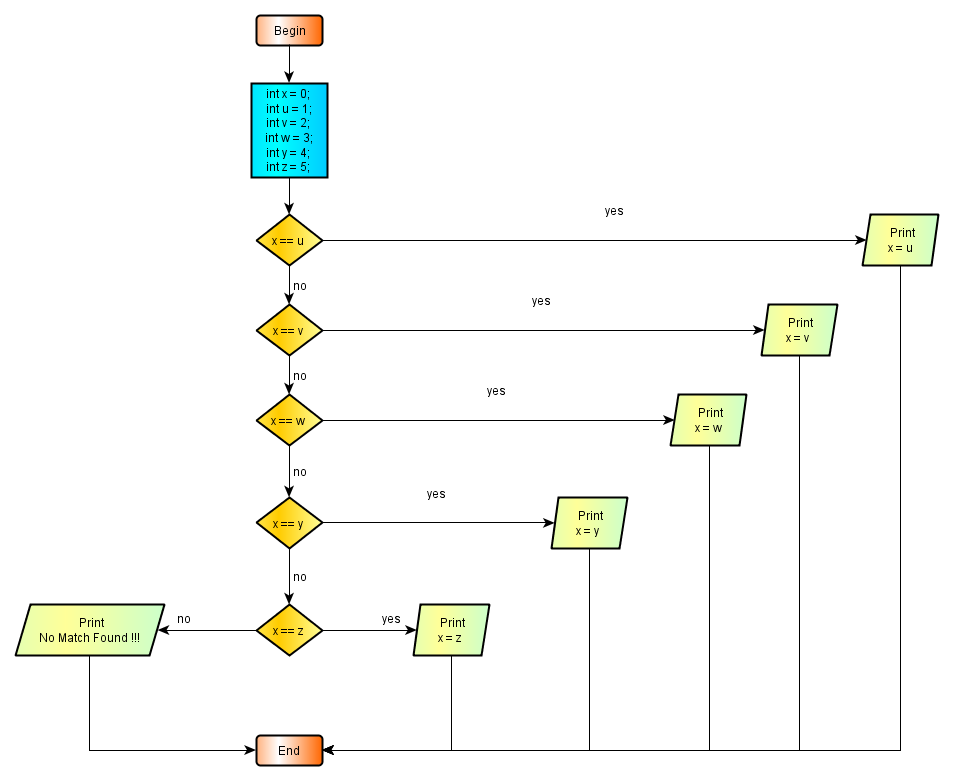

2.7.4 -Branching According Multiple Choices
When ther is a more than two choices for branching, we can use nested if - else ladders. This is a nested structure and contains as much layers as the existing choices. The flowsheet of this structure is :

2.7.4 - Image 1 Flowchart of the If -Else - If Ladder
The program of this flowchart :
package preliminary; public class IfElseIfLadder { public static void main(String[] args){ int x = 0; int u = 1; int v = 2; int w = 3; int y = 4; int z = 5; if (x == u) System.out.println("x = u)"); else if (x == v) System.out.println("x = v)"); else if (x == w) System.out.println("x = w)"); else if (x == y) System.out.println("x = w)"); else if (x == z) System.out.println("x = w)"); else System.out.println("No Match Found !!!"); } // end main } //end class IfElseIfLadder
The result of this program :
No Match Found !!!
Once one condition is satisfied, the remaining ones are not evaluated. Note that the last else belong to the last if, because this is the only if which is remained not served from any else's.
Although simple in the first sight, if - else if constructs have some drawbacks. We should open deeper if - else if layers with increasing choices for branching and this is not preferred in terms of compiler performance. The program coding becomes difficult when there is more than one statement to be executed per decision step. The codes blocks then may be difficult to follow.
If- else if constructs have been used with the early stages of programming languages. In modern times, switch statement is provided to handle conveniently the branching of the programs depending on multiple choices. Today, problems of branching according multiple choices is almost exclusively handled by more convenient switch statement that we'll introduce in the next section.